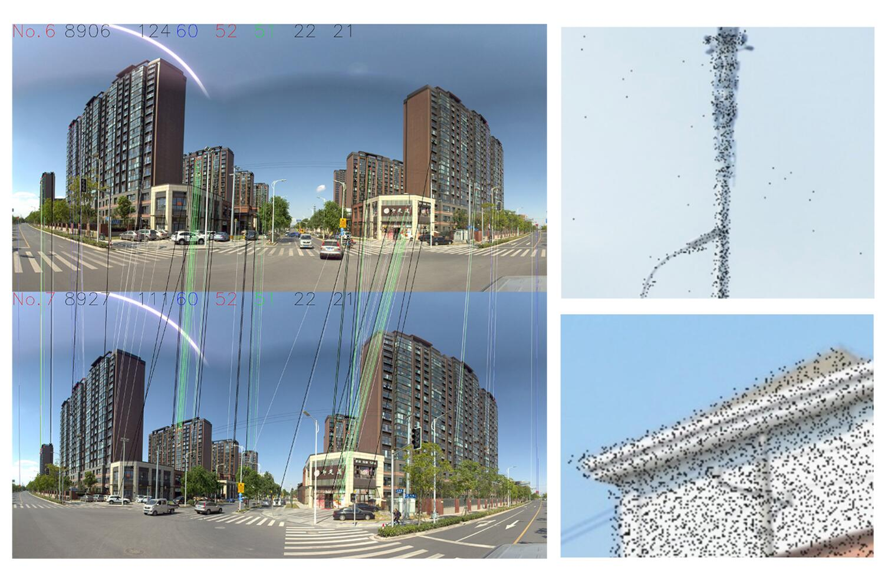
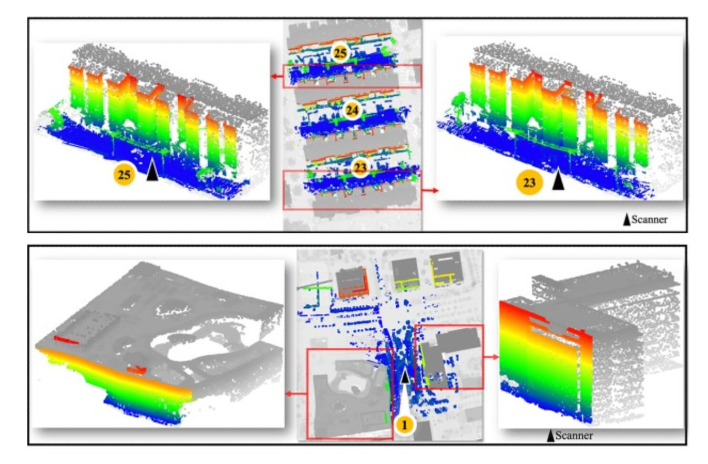
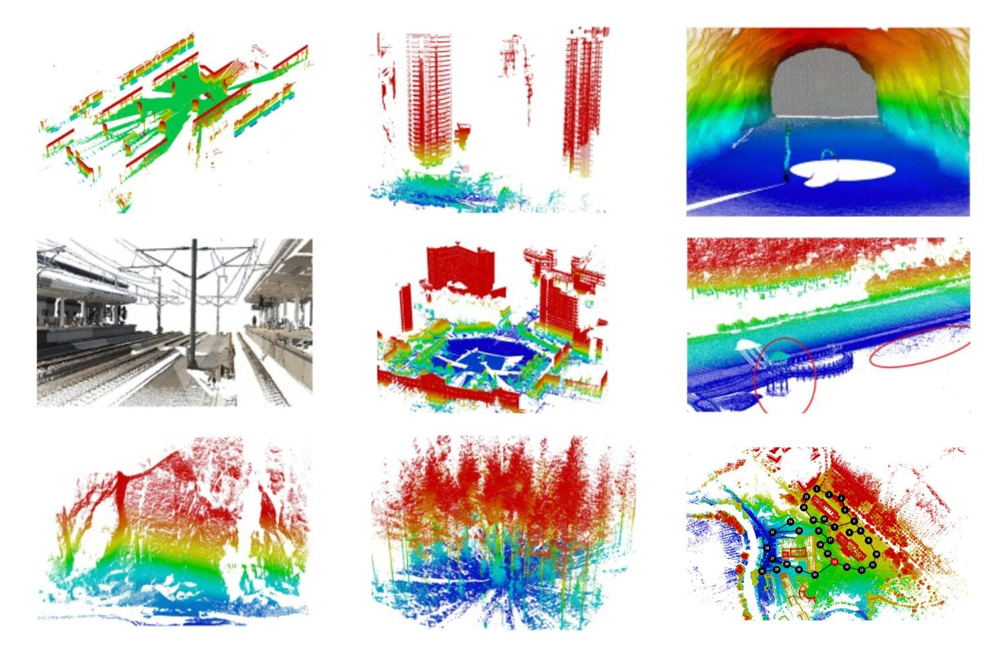
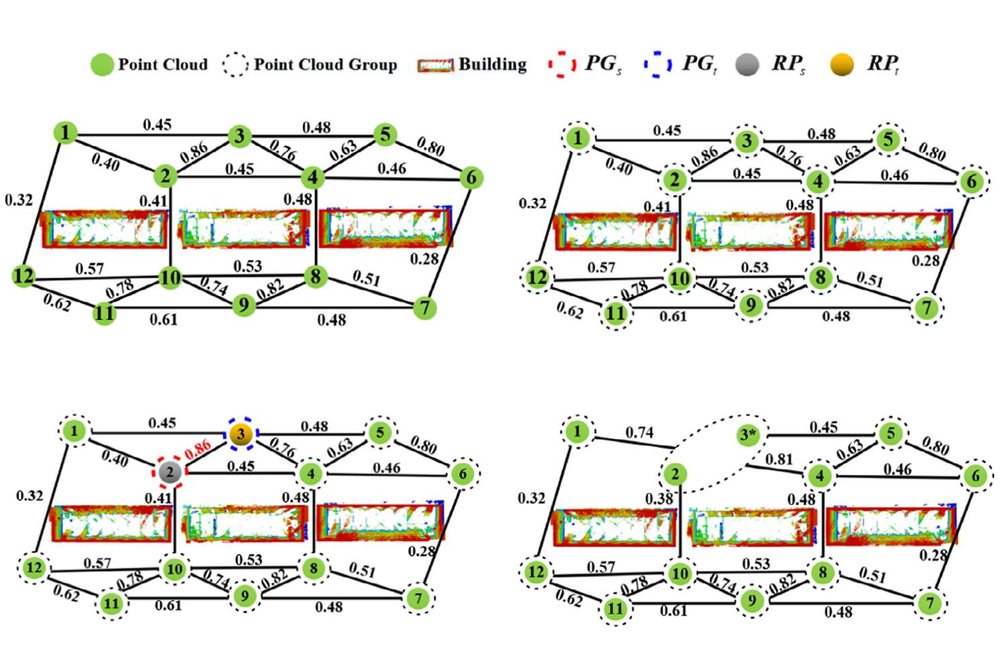
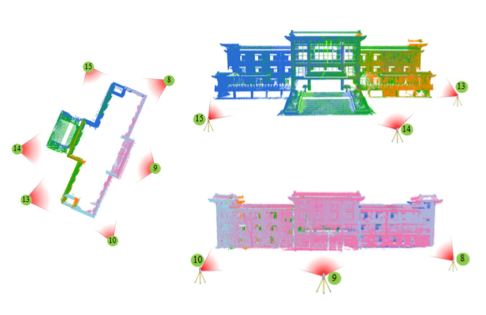

View by [Year] or [Topic].
* denotes equal contributions and † denotes the corresponding author.
Multi-modal Data Fusion
You Only Hypothesize Once: Point Cloud Registration with Rotation-equivariant Descriptors
Haiping Wang*, Yuan Liu*, Zhen Dong†, Wenping Wang
ACM MM 2022 (CCF-A)
[Paper]
[Code]
[Project]
JoKDNet: A joint keypoint detection and description network for large-scale outdoor TLS point clouds
registration
Yuan Wang, Bisheng Yang†, Yiping Chen, Fuxun Liang, Zhen
Dong†
International Journal of Applied Earth Observation and Geoinformation 104 (IF:7.672)
[Paper]

Automatic Registration of Mobile Mapping System Lidar Points and Panoramic-Image Sequences by Relative
Orientation Model
Ningning Zhu, Bisheng Yang, Zhen Dong, Chi Chen, Xia Huang, Wen Xiao
Photogrammetric Engineering & Remote Sensing 87 (12), 913-922 (IF:1.469)
[Paper]
P2-net: Joint description and detection of local features for pixel and point matching
Bing Wang, Changhao Chen, Zhaopeng Cui, Jie Qin, Chris Xiaoxuan Lu, Zhengdi Yu, Peijun Zhao, Zhen Dong, Fan
Zhu
CVPR 2021 (CCF-A)
[Paper]
[Code]
Learnable motion coherence for correspondence pruning
Yuan Liu, Lingjie Liu, Cheng Lin, Zhen Dong, Wenping Wang
CVPR 2021 (CCF-A)
[Paper]
[Code]
[Project]

A novel skyline context descriptor for rapid localization of terrestrial laser scans to airborne laser scanning
point
clouds
Fuxun Liang, Bisheng Yang†, Zhen Dong†, Ronggang Huang, Yufu
Zang, Yue Pan
ISPRS J (IF: 11.774)
[Paper]

Registration of large-scale terrestrial laser scanner point clouds: A review and benchmark
Zhen Dong, Fuxun Liang, Bisheng Yang, Yusheng Xu, Yufu Zang, Jianping Li, Yuan Wang, Wenxia Dai, Hongchao
Fan
ISPRS J (IF: 11.774)
[Paper]

Hierarchical registration of unordered TLS point clouds based on binary shape context descriptor
Zhen Dong, Bisheng Yang, Fuxun Liang, Ronggang Huang, Sebastian Scherer
ISPRS J (IF: 11.774)
[Paper]

Automatic registration of large-scale urban scene point clouds based on semantic feature points
Bisheng Yang, Zhen Dong, Fuxun Liang, Yuan Liu
ISPRS J (IF: 11.774)
[Paper]
Point Cloud Augmentation
PC2-PU: Patch Correlation and Position Correction for Effective Point Cloud Upsampling
Chen Long*, Wenxiao Zhang*, Ruihui Li†, Hao Wang, Zhen Dong,
Bisheng Yang
ACM MM 2022 (CCF-A)
[Paper]
[Code]
Point Cloud Completion Via Skeleton-Detail Transformer
Wenxiao Zhang, Zhen Dong, Jun Liu, Qingan Yan, Chunxia Xiao
IEEE Transactions on Visualization and Computer Graphics (IF:5.226)
[Paper]
Scene Understanding
Street-view Images Guided Street Furniture Inventory from Mobile Laser Scanning Point Clouds
Yuzhou Zhou, Xu Han, Mingjun Peng, Haiting Li, Bo Yang, Zhen Dong†, Bisheng Yang
ISPRS J (IF: 11.774)
[Paper]
Scientistic Calculation
Reconstruction
Others